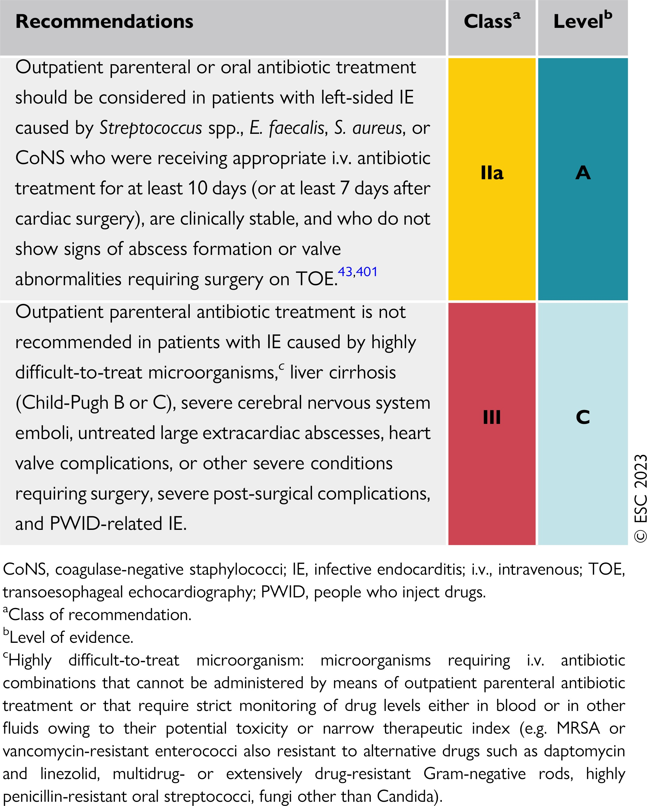
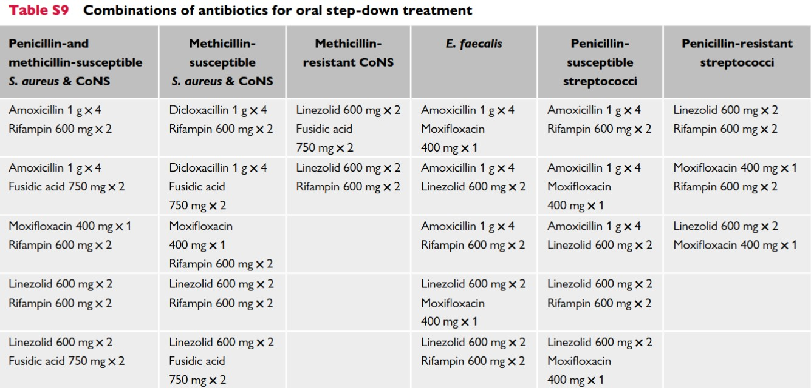

Recommendations for the Treatment of Methicillin-Resistant Staphylococcus aureus (MRSA)
Source [@Liu2011ClinicalPractice]
Source [@Liu2011ClinicalPractice]
| 狀況 | 診斷考量 | 經驗治療 | 根據培養結果調整最終療法並確定治療時長，包括出院處方 |
|---|---|---|---|
| 社區性肺炎 | 治療開始後複查病例以確認肺炎診斷或排除非感染性病因。 | 除非有臨床指徵，避免經驗性使用抗綠膿桿菌β-lactam類藥物和/或抗MRSA藥物。 | 大多數無併發症的成年肺炎病例可在患者迅速臨床反應的情況下進行5天治療。數據也顯示，MRSA鼻腔移生檢測結果為陰性可幫助指導停用MRSA肺炎的經驗性治療 |
| 泌尿道感染 | 實施尿液培養開立標準，以確保陽性培養更可能代表感染而非膀胱移生。例如： 僅在患者出現符合UTI的徵兆和症狀時訂開立培養，如尿急、頻尿、排尿困難、耻骨上疼痛、側腹疼痛、骨盆不適或急性血尿。 對於使用導尿管的患者，若無UTI的徵兆和症狀，避免僅因尿液外觀混濁或氣味難聞而進行尿液培養。 譫妄、噁心和嘔吐等非特異性徵兆和症狀應謹慎解讀，因為單獨這些徵兆對UTI的特異性較低。 |
建立標準以區分無症狀和有症狀的菌尿症。除非在某些臨床情況下需要治療（如妊娠婦女和進行侵入性泌尿生殖手術的患者），否則應避免對無症狀菌尿症進行抗生素治療。 | 使用臨床適宜的最短抗生素治療時長。 |
| 皮膚和軟組織感染 | 制定診斷標準以區分化膿性和非化膿性感染，以及疾病的嚴重程度（即輕度、中度和重度），以便根據指南適當管理皮膚和軟組織感染。 | 除非有臨床指徵，避免經驗性使用抗綠膿桿菌β-lactam類藥物和/或抗厭氧菌藥物。對於無併發症的非化膿性蜂窩織炎，可能不需要使用特別針對MRSA的治療。 | 大多數無併發症的細菌性蜂窩織炎病例可在患者迅速臨床反應的情況下進行5天治療。 |
Uncomplicated:
- Exclusion of endocarditis
- No implanted prostheses
- Negative follow-up cultures at 2–4 d
- Defervescence within 72 h of antibiotics
- No evidence of metastatic sites of infection


Proposed algorithm for the evaluation and management of SAB.
All patients should undergo a standardized minimum evaluation[^a] (thorough history and examination, repeat blood cultures, and TTE) that serves to stratify risk of metastatic foci. In those determined to have low-risk SAB (see below), additional workup can potentially be deferred. In those with indeterminant or high-risk SAB, additional evaluation[^b] (guided by the patient’s clinical features) is recommended. Classification of patients as having SAB with or without metastatic foci assists in guiding treatment decisions, which should include antibiotics, source control, and (when applicable) substance-use treatment. †Low-risk SAB: no predisposing host factors, negative TTE; blood cultures clear in <48 hours, bacteremia is hospital-acquired; no persistent fever, timely antibiotic start, and no clinical signs of metastatic infection. ‡High-risk SAB: risk factors and/or suspicion for IE; clinical signs of metastatic infection, implanted prostheses, history of IDU and/or IE; blood cultures are positive >48 hours of therapy, delayed start in antibiotics, persistent fever. ††Indeterminant-risk SAB: not meeting criteria for low- or high-risk SAB. Abbreviations: CIED, cardiac implantable electronic device; CT, computed tomography; MRI, magnetic resonance imaging; MRSA, methicillin-resistant Staphylococcus aureus; MSSA, methicillin-sensitive Staphylococcus aureus; OUD, opioid use disorder; PET/CT, positron emission tomography/computed tomography; SAB, Staphylococcus aureus bacteremia; SUD, substance-use disorder; TEE, transesophageal echocardiogram; TTE, transthoracic echocardiogram.
| Pathogen | Management |
|---|---|
| S. aureus | Risk of endocarditis in bacteremia: ˜25% (JACC 1997;30:1072) ID consult a/w ↓ mortality (ClD 2015;60:1451) Remove CVC, evaluate for endocarditis, osteo, hardware infections Preferred antibiotics: MSSA → nafcillin, oxacillin, or cefazolin. MRSA → vancomycin. Duration: 2 wks if normal host, no implants, no evidence of endocarditis or metastatic complications. Otherwise 4-6 wks. |
| Coag-neg staphylococci | CVC retention does not ↓ rate of resolution, but a/w ↑ rate of recurrence (CID 2009;49:1187). If CVC left, treat 10-14 days; if removed 5-7 days. |
| Enterococcus | Remove CVC & treat for 7-14 days |
| GNR | Remove CVC esp if Pseudomonas. Therapy for 14 days (7 if uncomplicated). |
| Yeast | Remove CVC & treat for 14 from first ⊖ BCx. ID consult a/w ↓ mortality. |
| - Persistently ⊕ BCx: remove CVCs, look for metastatic infection (endocarditis, septic arthritis, osteo), infected thrombosis, or prosthetic material (vascular graft, PPM) |
| Native Valve (NVE) | Prosthetic Valve (PVE) | |||
|---|---|---|---|---|
| Etiology | Non-IVDA | IVDU | Early (≤60 days) | Late (>60 d) |
| S. viridans et al. | 36% | 13% | <5% | 20% |
| Enterococcus | 11% | 5% | 8% | 13% |
| S. aureus | 28% | 68% | 36% | 20% |
| S. epidermidis | 9% | <5% | 17% | 20% |
| GNR | <5% | <5% | 6% | <5% |
| Other | <5% | <5% | 10% | 10% |
| Fungal^ | 1% | 1% | 9% | 3% |
| Culture ⊖^^ | 11% | <5% | 17% | 12% |
| ^ ↑ risk w/DM, indwelling lines, immunosupp. | ||||
| ^^ Cx ⊖ = abiotrophic strep, HACEK (Haemophilus para-influenzae & aphrophilus, Actinobacillus, Cardiobacterium, Eikenella, and Kingella), T. whipplei, Bartonella, Coxiella, Chlamydia, Legionella, Brucella (JAMA 2007;297:1354; Annals 2007;147:829; J Clin Microbiol 2012;50:216) |

| Sensitivity | |||
|---|---|---|---|
| NVE | PVE | Abscess | |
| Transthoracic (TTE) | 39-58% | 33% | 18-63% |
| Transesophageal (TEE) | >90% | 86% | 76-100% |
| Major | Minor |
|---|---|
| - Blood cultures with common endocarditis pathogen (grown in 2 separate culture) - Coxiella serology ≥1:800 - Endocardial involvement: vegetation, abscess, prosthetic dehiscence or new valvular regurgitation |
- Predisposing condition (see risk factors) - Fever - Vascular phenomena: septic arterial or pulmonary emboli, mycotic aneurysms, ICH, Janeway lesions - Immune phenomena: ⊕ RF, GN, Osler's nodes, Roth spots - ⊕ blood culture not meeting major criteria |
| Se ˜90%, Sp >95%, NPV ≥92% (CID 2000;30:633). |
| S. AUREUS | E. FAECALIS | NON-β-HEMOLYTIC STREPTOCOCCI |
|---|---|---|
| Intracardiac device | Symptoms ≥7 days | Symptoms ≥7 days |
| Prior endocarditis | Emboli | Greater than two positive cultures |
| Injection drug use | Greater than two positive cultures | One species: S. gallolyticus, S. sanguinis, S. mutans (not S. anginosus) |
| Cerebral/peripheral emboli | Unknown origin (no focus) | |
| Meningitis | Heart murmur | Heart murmur or valve disease |
| Preexisting valve disease | Valve disease (including prior endocarditis) | Community acquired |
| Persistent bacteremia (≥72 hours) | ||
| Vertebral osteomyelitis | ||
| Community acquisition | ||
| Non-nosocomial health care associated | ||
| Indeterminate or positive TTE |
| Pathogen | Treatment (Circ 2015;132:1435) |
|---|---|
| Empiric | NVE or PVE >12 mos post-op: vancomycin + ceftriaxone PVE <12 mos post op: vancomycin + ceftriaxone ± gentamicin (if OK renal function) |
| Strep | Penicillin, ampicillin, ceftriaxone; if PVE consider gentamicin in discussion w/ ID |
| Staph (S. aureus and lugdunensis) | MRSA: vancomycin or daptomycin MSSA: nafcillin, oxacillin, or cefazolin (avoid if CNS involvement due to poor penetration); vanc inferior to β-lactam for MSSA For PCN allergy w/ MSSA consider desensitization Consider rifampin / gentamicin in PVE in discussion w/ ID |
| Enterococci | Ampicillin + CTX or gent]; if VRE: linezolid, dapto, ampicillin if sensitive |
| Gram negatives | HACEK: CTX, ampicillin or FQ. Pseudomonas: 2 anti-Pseudomonal agents [eg, β-lactam + (aminoglycoside or FQ)] |
| Fungi (candida, aspergillus) | Candida: amphotericin B ± flucytosine or micafungin Aspergillus: amphotericin B or voriconazole Ophtho consult for fungemia to rule out endophthalmitis |
| - De-escalate abx to organism-directed therapy based on speciation and sensitivities | |
| - If on anticoagulation or antiplatelet, typically can continue unless concern for stroke, intracranial hemorrhage, or need for emergent surgery | |
| - Monitor for complications of endocarditis (CHF, conduction block, osteomyelitis, new embolic phenomenon) which can occur even on abx | |
| - Duration is usually 4-6 wks | |
| - After ≥10d IV abx can consider Δ'ing to PO if clinically appropriate and available PO abx in consultation with ID (NEJM 2019;380:415) | |
| - Uncomplicated right-sided NVE or PCN-S Strep spp → 2 wks may be adequate | |
| - IVDU-associated best managed by multidisciplinary teams including Addiction Medicine |


| Pathogens | Proposed therapya | Treatment outcome |
|---|---|---|
| Brucella spp. | Doxycycline (200 mg/24 h) plus cotrimoxazole (960 mg/12 h) plus rifampin (300–600 mg/24 h) for ≥3–6 monthsb orally | Treatment success defined as an antibody titre <1:60. Some authors recommend adding gentamicin for the first 3 weeks |
| C. burnetii (Q fever agent) | Doxycycline (200 mg/24 h) plus hydroxychloroquine (200–600 mg/24 h)c orally (>18 months of treatment) | Treatment success defined as anti-phase I IgG titre <1:400, and IgA and IgM titres <1:50 |
| Bartonella spp.d | Doxycycline 100 mg/12 h orally for 4 weeks plus gentamicin (3 mg/24 h) i.v. for 2 weeks | Treatment success expected in ≥90% |
| Legionella spp. | Levofloxacin (500 mg/12 h) i.v. or orally for ≥6 weeks or clarithromycin (500 mg/12 h) i.v. for 2 weeks, then orally for 4 weeks plus rifampin (300–1200 mg/24 h) | Optimal treatment unknown |
| Mycoplasma spp. | Levofloxacin (500 mg/12 h) i.v. or orally for ≥6 monthse | Optimal treatment unknown |
| T. whipplei (Whipple’s disease agent)f | Doxycycline (200 mg/24 h) plus hydroxychloroquine (200–600 mg/24 h)c orally for ≥18 months | Long-term treatment, optimal duration unknown |
| aOwing to the lack of large series, the optimal duration of treatment of IE due to these pathogens is unknown. The presented durations are based on selected case reports. Consultation with an infectious disease specialist is recommended. | ||
| bAddition of streptomycin (15 mg/kg/24 h in 2 doses) for the first few weeks is optional. | ||
| cDoxycycline plus hydroxychloroquine (with monitoring of serum hydroxychloroquine levels) is significantly superior to doxycycline.385 | ||
| dSeveral therapeutic regimens have been reported, including ampicillin or amoxicillin, (12 g/24 h i.v.) or cephalosporins (ceftriaxone 2 g/24 h i.v.) combined with aminoglycosides (gentamicin or netilmicin).381 Dosages are as for streptococcal and enterococcal IE.379,380 | ||
| eNewer fluoroquinolones (levofloxacin, moxifloxacin) are more potent than ciprofloxacin against intracellular pathogens such as Mycoplasma spp., Legionella spp., and Chlamydia spp. | ||
| fTreatment of Whipple’s IE remains highly empirical. In the case of central nervous system involvement, sulfadiazine 1.5 g/6 h orally must be added to doxycycline. An alternative therapy is ceftriaxone (2 g/24 h i.v.) for 2–4 weeks or penicillin G (2 million U/4 h) and streptomycin (1 g/24 h) i.v. for 2–4 weeks followed by cotrimoxazole (800 mg/12 h) orally. Trimethoprim is not active against T. whipplei. Successes have been reported with long-term therapy (1 year). |



| Cardiac conditions^ | Prosthetic valve; previous endocarditis; congenital heart disease (CHD) including unrepaired or incompletely repaired cyanotic CHD (palliative shunts or conduits), 1st 6 mo after completely repaired CHD using prosthetic material; cardiac transplant recipients w/ valvulopathy. (Prophylaxis no longer rec. in acquired valvular dysfxn, bicuspid AoV, MVP with leaflet thickening or regurgitation, HCM.) |
|---|---|
| Procedures^ | Dental: manipulation of gingival tissue or periapical region of teeth or perf oral mucosa (eg, extraction, periodontal, implant, root canal, cleaning) |
| Regimens | Oral: amoxicillin 2 g 30-60 min before Unable to take PO: amp 2 g IM/IV or cefazolin or ceftriaxone 1 g IM/IV PCN-allergic: cephalexin or azithro or claritho or doxy |
| ^Pts should meet both indications (high-risk condition & high-risk procedure) to qualify for prophylaxis |